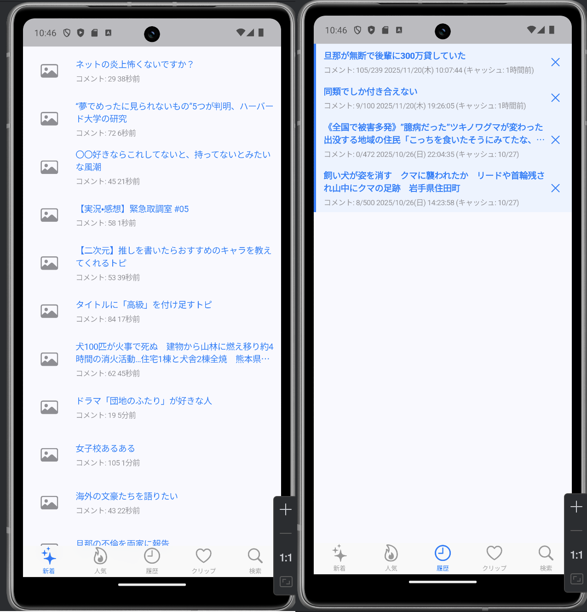

Google Play リリースに向けた
クローズドテスト参加者募集中！

※iOS版の募集は現在行っておりません。
※いただいたメールアドレスはテスト招待の送信のみに使用します。
開発者側での登録が完了していないか、Google Playの反映待ちの状態です。登録完了メールが届くまでもう少々お待ち下さい。
バグを見つけたり要望があれば、X（Twitter）などで教えていただけると嬉しいですが、基本的には「インストールして維持」していただくだけでも十分大きな貢献になります！
そのまま製品版としてアップデートできるようになります。アプリを削除する必要はありません。
不具合や要望は https://x.com/chibikuromoka まで。